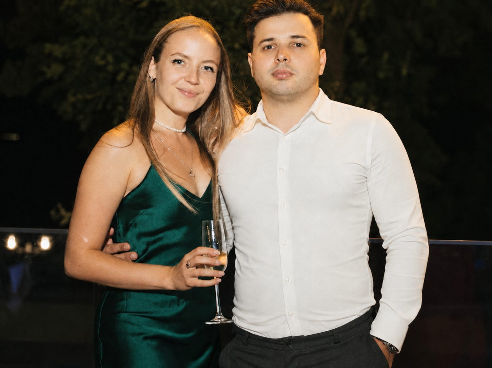
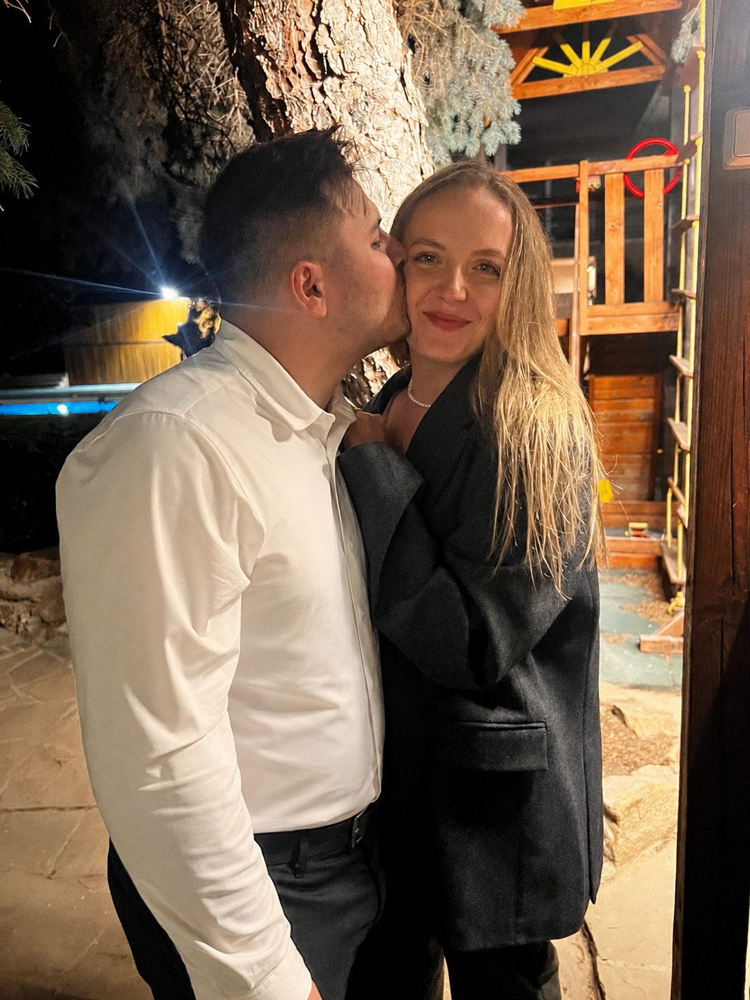
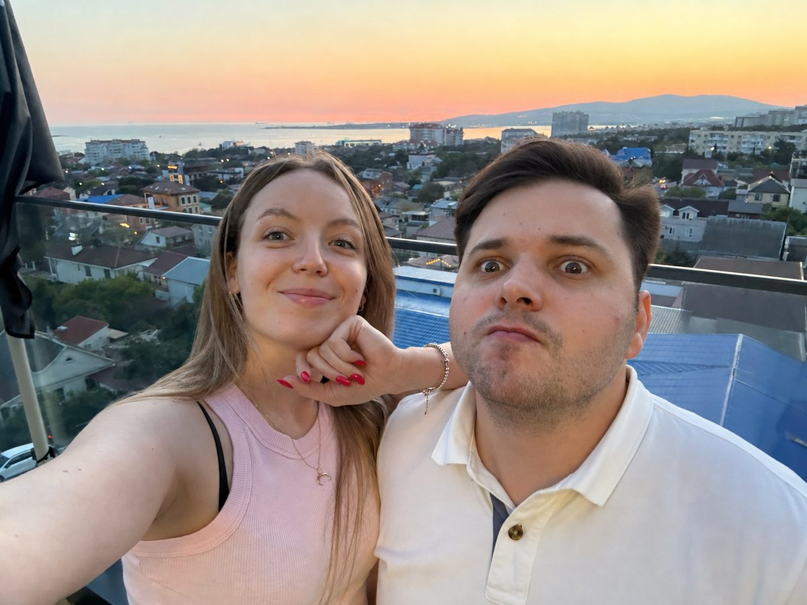
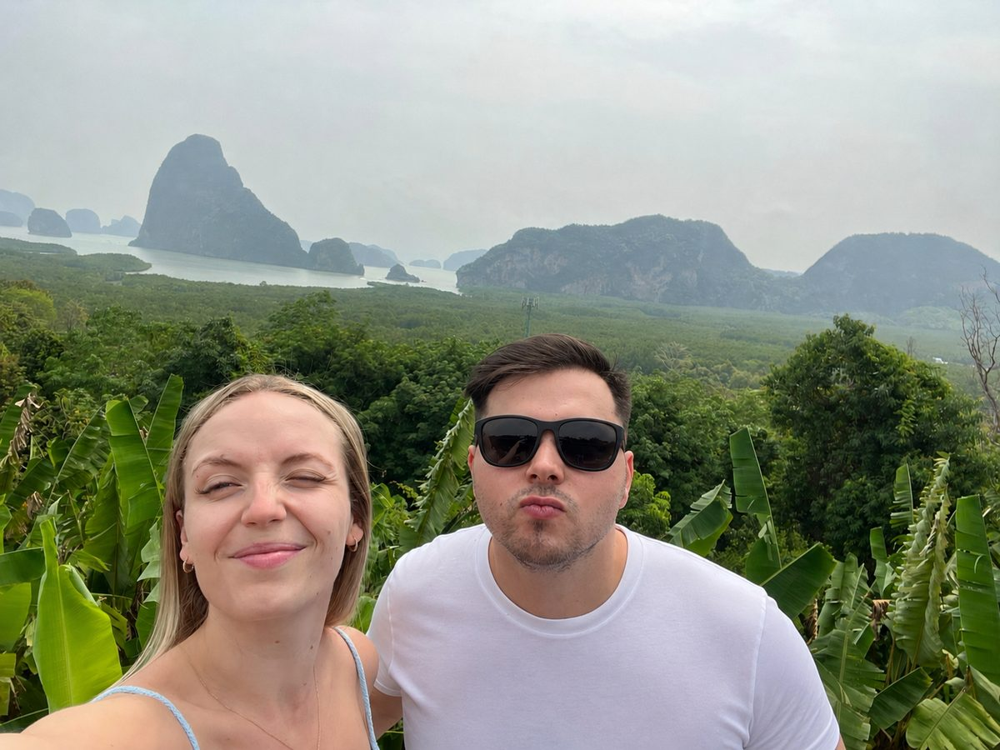
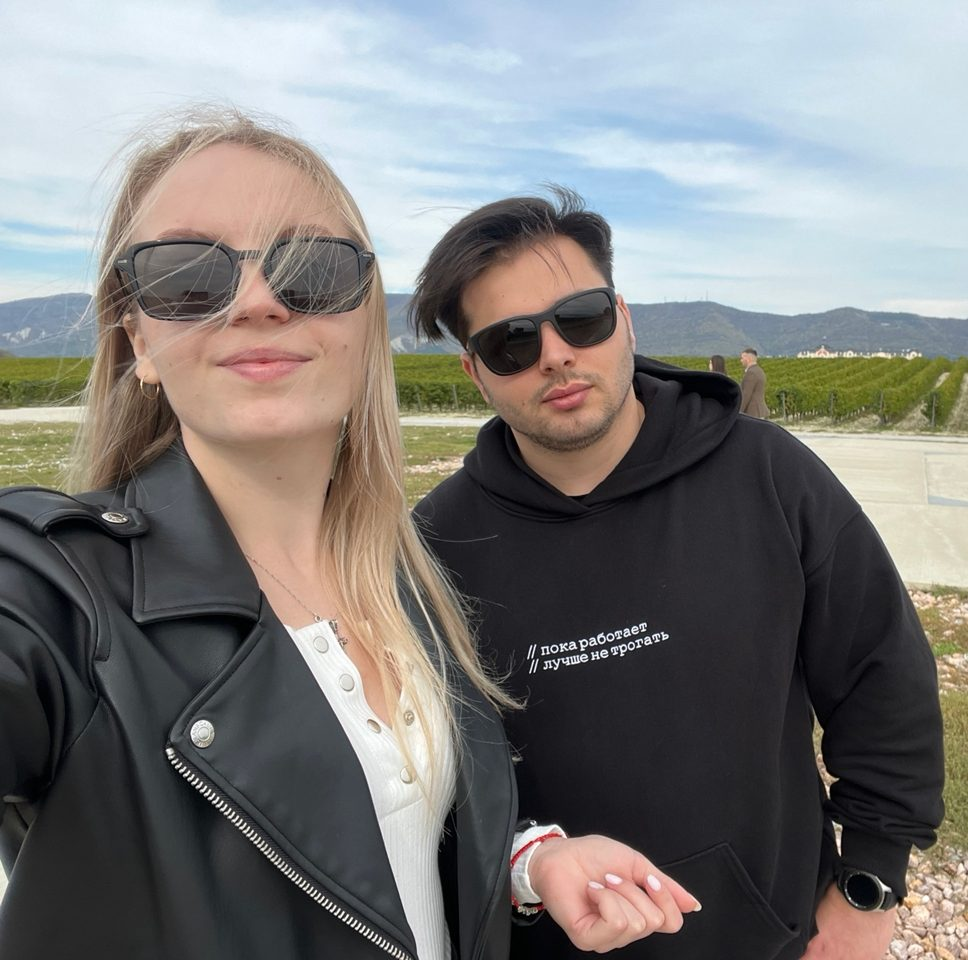
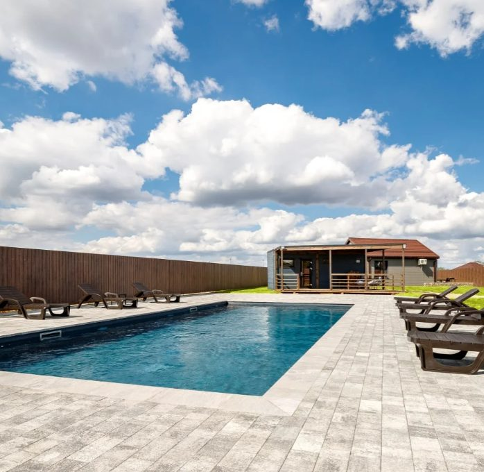

Георгий&Анастасия

Дорогие гости, приглашаем вас стать свидетелями этого смелого шага. Обещаем: будет весело, вкусно и очень по-семейному.
Давайте создадим воспоминания, которые будем вспоминать и смеяться над ними ещё лет сто!

мы
Георгий &
Анастасия



Октябрь
| пн | вт | ср | чт | пт | сб | вс |
|---|---|---|---|---|---|---|
| 1 | 2 | 3 | 4 | |||
| 5 | 6 | 7 | 8 | 9 | 10 | 11 |
| 12 | 13 | 14 | 15 | 16 | 17 | 18 |
| 19 | 20 | 21 | 22 | 23 | 24 | 25 |
| 26 | 27 | 28 | 29 | 30 | 31 |

Kravchenko Place
База отдыха · Динской район, село Первореченское,
ул. Восточная, 10
Как добраться
We Meet
Сбор гостей
We Do
Церемония регистрации
We Party
Начало банкета
The End
Завершение вечера
Мы рады видеть вас в любых нарядах. Не забудьте купальник и сменную одежду для расслабленного вечера.
Пожелания
Будем очень признательны, если вместо цветов вы выберете белое вино или корм для животных, который позже мы отвезём в приют 🤍
Мы очень любим ваших деток, но это будет взрослое мероприятие. Просим отнестись с пониманием.
Нас будет сопровождать ведущая Арина. Если вы хотите подготовить отдельное поздравление или увеселить вечер, просим связаться с ней.
Арина
+7 (989) 817-47-59With Love
Георгий & Анастасия